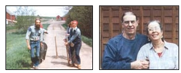
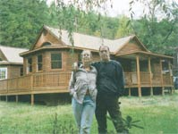

Well, well, well. I certainly asked for it! I received 68 letters in reply, quite a few from Canadians one from Alaska and the rest from all over the United States. The most important letter, though, was from the man who would, before the year was over, become my husband, father to my two boys, and eventually the father of our own two children.
Through the spring and summer of 1974, Kip Sorensen and I wrote back and forth and talked on the phone; me from my farm job in Ontario and him from his job on a wheat farm in the northeastern hills of South Dakota. Early in August my 13-year-old son and I took the Canadian National Railway west from Ontario. We stopped in Winnipeg, crossed the border into South Dakota and met Kip. To make a long story short, we met, sparks flew, and on Sept. 24 my boys and I arrived back in South Dakota to stay. I've always been one to make my mind up fast.
When we began our life together we lived on a rented farm. The rent was cheap in exchange for overseeing cattle on several hundred acres of rolling pasture. In exchange for repairs on a sagging front porch, a neighbor gave us a flock of laying hens. For a sack of onions, another farmer gave us two bottle lambs. Sioux Bee Honey gave us 150 pounds of honey for letting them place a flatbed trailer full of hives in the pasture.
During our second summer together we moved onto the Sorensen's farm in Flandreau, South Dakota. Kip's grandfather, a Danish immigrant, homesteaded the farm in 1881. Kip converted the farm's granary building into a great house: one big room with three sleeping lofts and a greenhouse. Our old Home Comfort cookstove kept us warm and well fed.
Just after the birth of our daughter, Winter, we began to farm more. Kip grew edible beans (pintos and Great Northerns) while I milked cows and kept chickens, ducks, pigs, turkeys and sheep. The soil on our farm was wonderful, and with the aid of the greenhouse we grew almost three acres of veggies - enough to share with elderly in-laws, family and friends, and enough left to sell some at the Sioux Falls farmer's market. We sold all kinds of things from the farm: weaner pigs, lambs for slaughter, sheared wool for handspinners, chicken fryers and eggs, as well as yogurt and fresh cheese from our jersey cows.
Two years after the birth of Bjorn, our youngest son, a blow fell on what was an increasingly productive and exciting farm life. The federal government's Farm Home Administration unilaterally called in all the small farm loans in eastern South Dakota. It was the worst of the 1982 farm crisis and we got caught up and spit out along with many others that year. In addition to farming, Kip worked full time remodeling and building houses. So we knew we could survive, but not on the farm. The downturn in the economy meant that Kip's carpentry work also was hard hit. We made the painful decision to leave South Dakota.
Our decision to move to Virginia came from the opportunity to settle near friends in the Piedmont of the Blue Ridge. We were fortunate that the bleak building prospects in the Midwest were not the case in central Virginia. Kip immediately began to build and restore log cabins and has moved on to build custom homes, as well as create custom cabinetry and furniture.
I continue to garden in the Piedmont's clay soil, but Virginia has restrictive laws on farm product sales: Unpasteurized milk (cow or goat), homemade cheese and butchered meat cannot be sold by private citizens. Once we were settled here it was clear I needed an income other than farming. Early in 1983, I began my career as a costumed historic-house interpreter. My longtime interest in African American history became the foundation for my work over the past 15 years as a consultant to museums and historic houses.
In 1988, an opportunity to attend college presented itself through a degree program at Mary Baldwin College - I snatched it. Now I am working to complete my doctorate in American Studies from the College of William & Mary. I also am the Director of the Reynolds Homestead, an historic house museum and continuing education center owned by Virginia Tech. Much of what I learned while farming in South Dakota still plays an important part in what I teach to the public and to undergraduate students - American rural history of the 18th and 19th centuries.
Kip is building us a new house to replace our 100-year-old farmhouse that burned to the ground just before Christmas 2000. It was determined that the rear chimney cracked open, high in the second story. As hard as it was to lose so many of our cherished possessions we were grateful Kip wasn't hurt - he dived buck-naked out a second-story window into the snow at three in the morning just before the roof collapsed! At the time I was in Seattle visiting our daughter and son-in-law.
The new house is going up on the footprint of the old house. It is only one story, has an open-plan interior and is full of windows for light. The western cedar siding gives the house a rich glow, especially in the fanned pattern in the gables. Kip chose oriented strand board for the subfloors and sheathing, with floor joists made of a similar material. We found used glass for the living room skylight and for the three elliptic eyebrow windows in the gable ends. Most of the finished wood for the house's interior is coming from various reclaimed woods - heart pine, chestnut and oak - that Kip found and stored over the years.
We will again have a wood cookstove as the kitchen's centerpiece, but there also will be hot water baseboard heat throughout the house. Kip designed the heat pipes to run behind soapstone conductors, a combination that should be both beautiful and warm. Eventually much of our hot water will come from solar heat. The fireplace, and the kitchen and bathroom counters and sinks all will be made from soapstone. Not only are the multihued grays of the stone beautiful, but soapstone is a nonconductive, nonreactive medium that is perfect for hard use and for thermal mass. Our eldest son, Kierk, owns New World Stone Company, a source of Virginia soapstone for architectural, landscaping and art use across the country.
It's been 30 years since either of us has lived where there are streetlights or sidewalks. Oh, I lied. I did go away to graduate school and live in student housing for a while. It was fun to walk to the movies, or to get an ice-cream cone whenever I wanted. But I was glad to return to our home that lies 16 miles from town, just below the crest of Shenandoah National Park, with the woods and the river framing the sky.
So MOTHER, I got everything I asked for in my 1974 letter - and far more than I ever could have imagined.
|
left: Kip and Leni Moving the Daisy pig (behind Kip) in South Dakota, circa 1975. Right: Kip and Leni, today. |
 Leni and Kip in front of their work-in-progress in Crozet, Virginia. |
 |